#Necessary imports
#Numpy/Pandas - used for working with the time series data and applying necessary transformations
import numpy as np
import pandas as pd
#Matplotlib and seaborn used for visualizations
import matplotlib.pyplot as plt
import seaborn as sns
#Sklearn functions used for splitting data into training and test sets and running measures to gauge model performance
from sklearn.model_selection import train_test_split
from sklearn.metrics import mean_absolute_error, root_mean_squared_error
#Statsmodels functions used to check stationarity, determine appropriate ARIMA orders, and set up ARIMA model
from statsmodels.tsa.stattools import adfuller
from statsmodels.graphics.tsaplots import plot_acf, plot_pacf
from statsmodels.tsa.arima.model import ARIMAARIMA Coding Example in Python
Time Series
ARIMA
Forecasting
Baseline Models
Visualization
Naive Forecasts
End-to-End Projects
Forecasting NVDA stock prices using ARIMA and Naive with Trend Models
In the last article, we introduced the core concepts of one of the most enduring time series modeling techniques: ARIMA.
We will build on that foundation in this article by walking through an end-to-end coding project.
We will be using daily NVDA stock data from January 2022 through October 2026. Our goal? To see if a basic ARIMA model can do a better job of predicting the daily opening price of NVDA stock than a naive model with trend.
As we go through this exercise, I would encourage you to follow along in your notebook. The CSV file is available for download here.
Step 1: Import Packages and Prepare NVDA Data
First, let’s get the necessary packages loaded. A simple explanation of what each module or function will be used for is included in the comments.
Now, we will load our data using pandas’ read_csv() function. Then we will set up our time series index.
#Load data from CSV file
nvda = pd.read_csv('nvda.csv')
#Set up date index
nvda['Date'] = nvda['Date'].str[:10] #Extract just the date (YYYY-MM-DD) from the timestamp - we don't need times for this exercise
nvda['Date'] = pd.to_datetime(nvda['Date']) #Convert string to datetime
nvda = nvda.set_index('Date') #Set Date as indexLet’s separate out the “Open” stock price from the rest of the data. That is the feature we will focus on in this project.
y = nvda['Open'].copy()
y.head(10) #Check first several rows to see how the data looksDate
2022-01-03 29.82
2022-01-04 30.28
2022-01-05 28.95
2022-01-06 27.64
2022-01-07 28.14
2022-01-10 26.58
2022-01-11 27.32
2022-01-12 28.07
2022-01-13 28.38
2022-01-14 26.30
Name: Open, dtype: float64Okay, we are ready to move to our EDA (Exploratory Data Analysis) stage.
Step 2: Explore the Data
Summary Statistics
Let’s take a moment just to review some basic summary statistics about our data. We can use pandas’ .describe() method to get this information in one line of code.
y.describe()count 1212.000000
mean 100.724018
std 71.425291
min 10.970000
25% 27.025000
50% 100.455000
75% 174.492500
max 242.100000
Name: Open, dtype: float64From this, we can find the mean of our data (~$101), the midpoint (~$100), and the min (~$11) and max (~$242). We also can see the standard deviation (~$71). These are good numbers to have available as we move forward in our analysis.
Checking for Structure
Exploring the data for a time series is similar to working with cross-sectional datasets. However, one difference is that we try to identify any of the key time series structures like trends, seasonality, or cycles.
A good starting point is a basic line plot. This can be done using the built-in .plot() method for a pandas series like in the following cell. Note, it’s usually a good idea to add a title and ensure your x and y axes are labeled. This only takes a moment and can make your analysis much easier to understand for yourself or others later on.
y.plot(figsize=(8, 6))
plt.title('NVDA Opening Price: 2022-2026')
plt.ylabel('Open Price (USD)')
plt.xlabel('Date')
plt.show()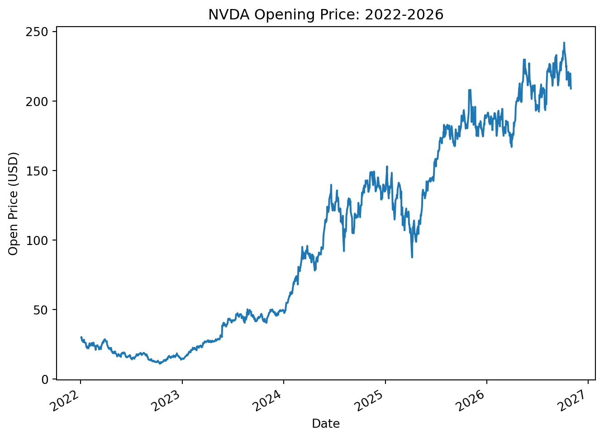
What can we see here? The only noteworthy structure we see is a clear upward trend. There is no evidence of seasonality or observable cycles in this view. That trend is something we will need to account for in our modeling, so keep that observation in mind.
Now, let’s check for any seasonal trends that may not have been readily apparent in the line chart above. We can plot each year’s worth of data to see if there are any changes at the monthly level that are not clear at the daily level.
monthly_nvda = y.resample('MS').mean() #Use pandas' `.resample()` method to make our data monthly in nature. We will summarize with the mean opening price for the month.
monthly_nvda = pd.DataFrame(monthly_nvda)
monthly_nvda['Year'] = monthly_nvda.index.year
monthly_nvda['Month'] = monthly_nvda.index.month
sns.lineplot(data=monthly_nvda, x='Month', y='Open', hue='Year', palette='viridis')
plt.show()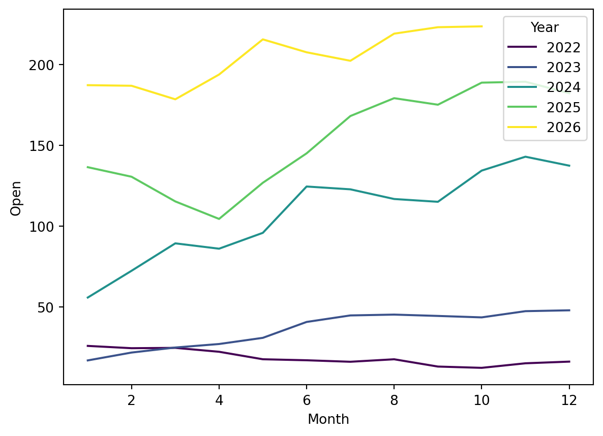
At first glance, this may appear to show seasonal variations. After all, the price appears to be higher in the later months than in the earlier months. However, this is due to our upward trend, rather than seasonal fluctuations. We need to do something to remove the trend to get a clear picture. Let’s try differencing our data and see what that visual looks like.
monthly_nvda['Change in Open'] = monthly_nvda['Open'].diff(1)
sns.lineplot(data=monthly_nvda, x='Month', y='Change in Open', hue='Year', palette='viridis')
plt.show()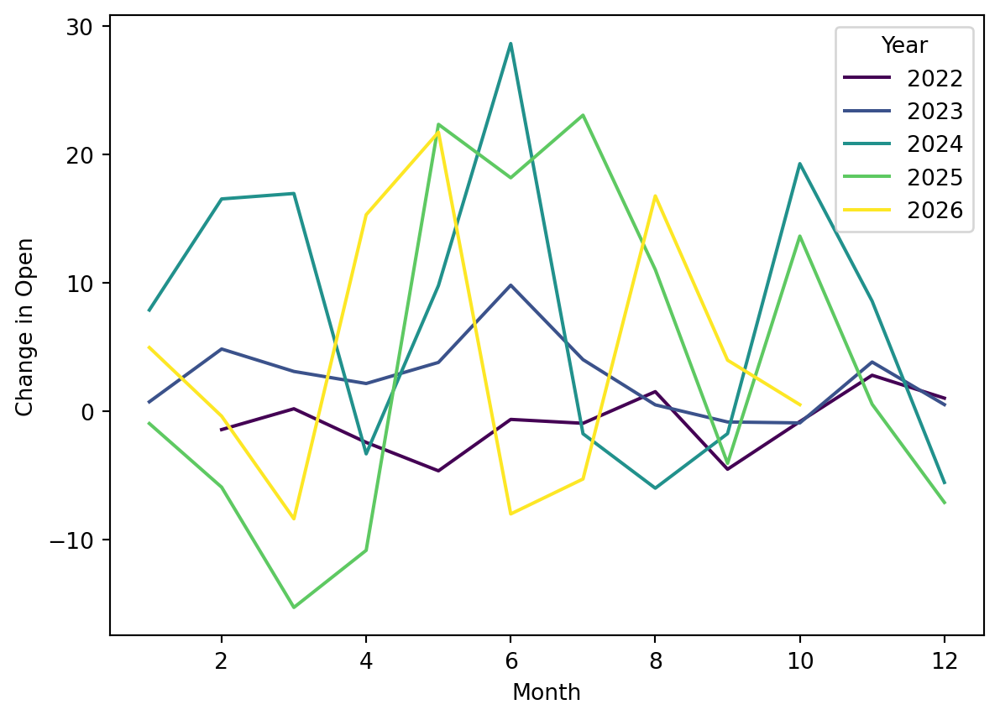
When we difference our data (removing the trend), we find that we are left with something more akin to abstract art than a clear seasonal structure. We are safe to move forward, confident that our data does not have a seasonal structure to it.
Checking Variance over Time
A scatterplot is another good visualization to check as well. Though very similar to the line plot at first glance, it can shed additional light on the distribution of the data and variance over time.
plt.figure(figsize=(8, 6))
plt.scatter(x=y.index, y=y, alpha=.15, s=30)
plt.title('NVDA Opening Price: 2022-2026')
plt.ylabel('Open Price (USD)')
plt.xlabel('Date')
plt.show()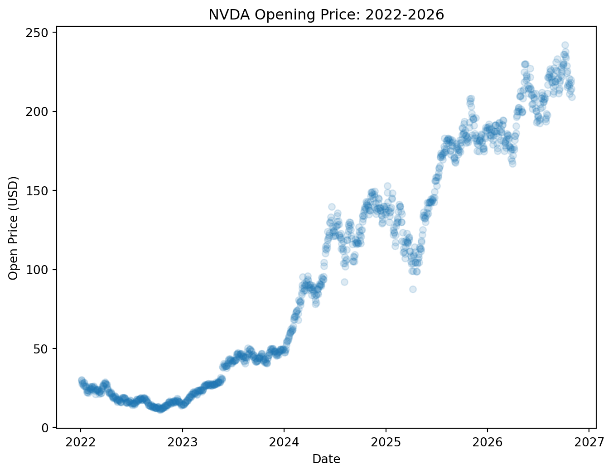
The clearest observation based on this plot is that the variance is very small from 2022-2024. From 2024-2026, the points are much more spread out, which indicates greater variance later in the dataset. This will affect our transformation steps before we can model this data.
Let’s take a moment to assess the standard deviation over time to see if we can get a clearer picture of how the variance fluctuates throughout our time series. We can again use the .resample() method from pandas to help us out here. This time, we will summarize each month by the standard deviation, rather than the mean. Then we will use a line plot to view how this changes over time.
monthly_nvda_std = y.resample('MS').std()
monthly_nvda_std = pd.DataFrame(monthly_nvda_std)
monthly_nvda_std = monthly_nvda_std.rename(columns={'Open': 'Std'})
monthly_nvda_std['Year'] = monthly_nvda_std.index.year
monthly_nvda_std['Month'] = monthly_nvda_std.index.month
monthly_nvda_std['Std'].plot(figsize=(8, 6))
plt.title('Standard Deviation of Monthly NVDA Open Price: 2022-2026')
plt.xlabel('Date')
plt.ylabel('Standard Deviation (USD)')
plt.show()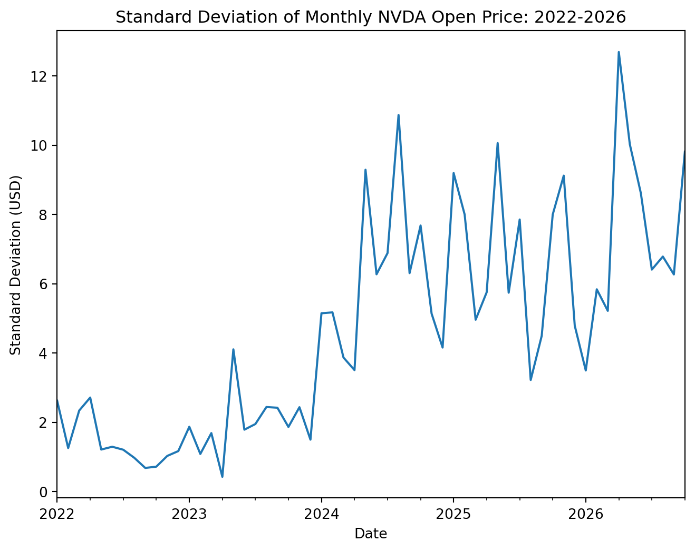
Just as we suspected, the standard deviation increased from ~$2.25 to ~$10 by the end of our time series. This confirms what we observed earlier and helps us to quantify just how much the variance has increased over time.
Checking Data Distribution
As with any dataset, we need to also understand the distribution of our data. We will use a histogram to examine this aspect of our NVDA stock data.
y.hist(bins=25)
plt.title('Distribution of NVDA Opening Price: 2022-2026')
plt.xlabel('Open Price (USD)')
plt.ylabel('Count of Days')
plt.show()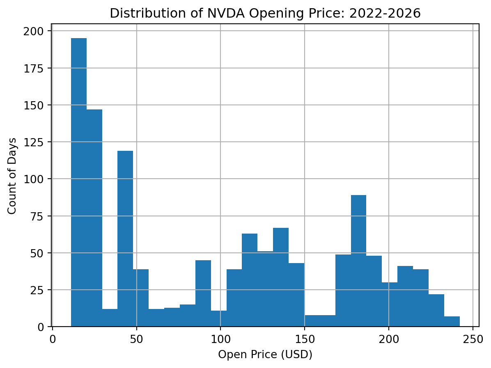
Let’s pair this with a boxplot. The box represents the IQR (interquartile range), the middle 50% of our data. The whiskers show the spread of the remaining data, extending up to 1.5 times the IQR beyond the box; any points past the whiskers are plotted individually as outliers. Note, the patch_artist parameter fills in the box.
plt.boxplot(y, patch_artist=True)
plt.title('Distribution of NVDA Opening Price: 2022-2026')
plt.ylabel('Open Price (USD)')
plt.xlabel('NVDA')
plt.xticks([])
plt.show()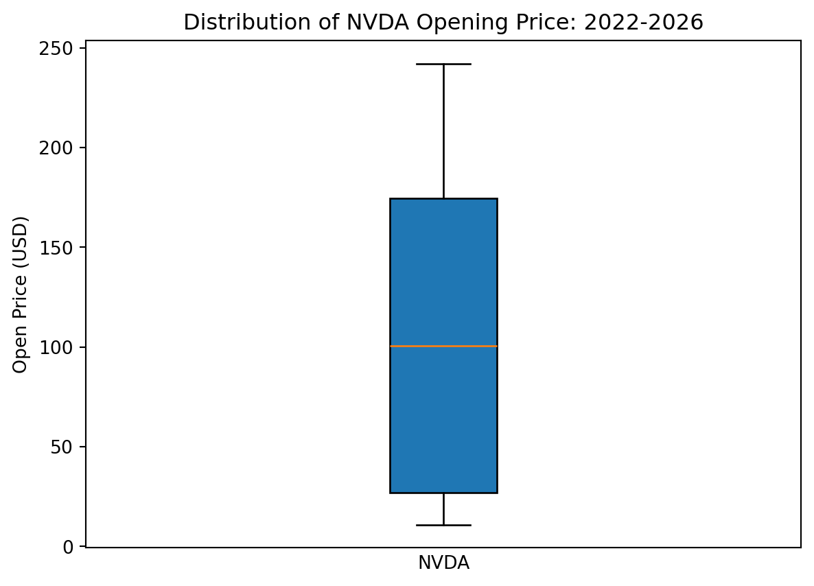
What can we ascertain from these two visualizations? First, we note that our data is right-skewed. The largest number of days fall between $10 and $50 opening price. However, we do see smaller peaks around $100-$150 and $175-$190.
Our boxplot brings the spread of our data into clearer view. The middle of our data ranges from around $25-$175. The short whisker from $10-$25 indicates much less spread in that direction, with much more upward spread from ~$175-$250. This again reinforces what we surmised earlier. Variance is greater at the higher price points than at the lower price points.
Concluding EDA
Our exploration uncovered some key insights about the NVDA stock price time series:
- The NVDA stock price has a clear upward trend from 2022-2026
- There is no repeating seasonal fluctuation to the data
- The variance of the stock price increases during this time period
- The data distribution is right-skewed but has a couple other smaller points of concentration
Having explored our data, we are now ready to proceed with building our ARIMA model.
Step 3: ARIMA Model Setup
Preparatory Steps
Setting up an ARIMA model for this data will require a few preparatory steps. First, we need to figure out what it will take to make our data stationary. The clear trend we observed in the data set will need to be removed. We already briefly discussed how to do this by differencing our data.
As a reminder, differencing our data just means taking the change between instances rather than the values themselves. In other words, we will convert our NVDA stock open price to the change in the NVDA stock open price.
For more information about differencing, check out this article.
#Use pandas' .diff() method to create a differenced version of the time series
y_diff = y.diff(1).dropna() #Drop the resulting null value
#Plot the differenced data to see if it appears stationary.
y_diff.plot(figsize=(8, 6))
plt.title('Change in NVDA Open Stock Price: 2022-2026')
plt.ylabel('Change in Price (USD)')
plt.xlabel('Date')
plt.show()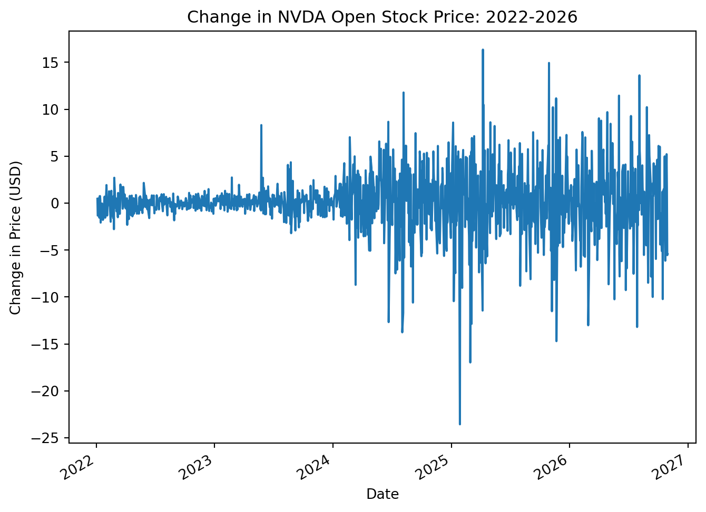
Differencing by 1 certainly removed the trend in our data. However, this does not automatically make our data stationary. Something will have to be done to address the increasing variance that is still apparent here.
One way to address this is by taking the natural log of our data set first. We will then difference the log-transformed version of our time series. We use the np.log() function here to remove the change in variance.
#Create the log-transformed version of our time series
y_log = np.log(y)
#Difference the log-transformed version of our time series
y_log_diff = y_log.diff(1).dropna() #Drop the null value created by the differencing
#Now plot the data to check for stationarity
y_log_diff.plot(figsize=(8, 6))
plt.title('Log-Transformed, Differenced NVDA Open Stock Price')
plt.xlabel('Date')
plt.show()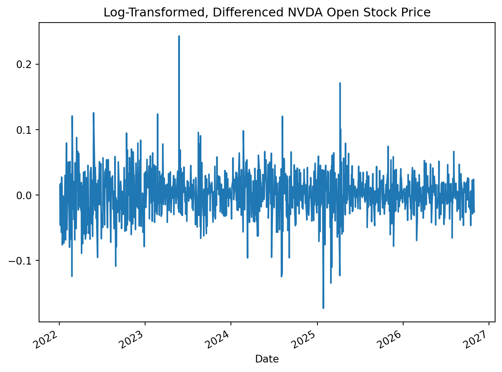
This transformed, differenced series shows strong evidence of stationarity. Just to confirm, let’s use an Augmented Dickey-Fuller test. As a reminder, this test provides us with a p-value. A low p-value, typically less than .05, is interpreted as evidence of stationarity. A high p-value, typically greater than .05, is interpreted as evidence of non-stationarity.
adf_results = adfuller(y_log_diff)
print('ADFuller P-Value: ', adf_results[1]) #Print just the p-value from the resultsADFuller P-Value: 0.0Our p-value is ~0.0. This confirms that our time series is stationary with the log-transformation and the differencing we have done.
Our model plan is starting to come together: We will train our ARIMA on the log-transformed dataset. The ARIMA order for d will be 1, because we needed to only difference once to achieve stationarity. We do not train the ARIMA model on the differenced data, because it handles the differencing step for us.
Train-Test Split
Before we go any further, we need to split our data into a train set and test set. This ensures that we have part of our data that is “unseen” by our model. We will use that test set later in the process to check our model’s performance on data it was not trained on.
y_log_train, y_log_test = train_test_split(y_log, shuffle=False, test_size=.1) #Shuffle set to False since this is a time seriesACF and PACF Plots
All that is left now is to determine what the appropriate order values are for the AR (autoregression) and MA (moving average) components of our model. To do this, we will use two special types of visualizations: ACF (Autocorrelation Function) and PACF (Partial Autocorrelation Function) plots.
We will delve deeper into what these plots represent and how they are interpreted in a future article, but here are the basics:
- The ACF plot shows how much the time series values correlate with past values (lags), without filtering out intervening correlation between lags. This is used to determine our MA order, known as
q, which specifies how many previous forecast errors to include in the ARIMA model. - The PACF plot shows how much the time series values correlate with past values (lags), filtering out intervening correlation between lags. This is used to determine our AR order, known as
p, which specifies how many previous lags to include in the ARIMA model. - In both plots, you are focusing on lags which show a point outside the blue shaded zone. These are points that show a significant correlation.
The following table is sourced from Nielsen (2019, p. 187). It gives a quick guide on how to interpret ACF and PACF plots.
#This code just generates the quick guide for interpreting ACF and PACF plots.
#This will be very helpful in helping you determine the values of `p` and `q`.
acf_pacf_guide = pd.DataFrame(
{
'Plot Type': ['ACF', 'PACF'],
'AR(p)': ['Trails off slowly', 'Sharp drop after lag=p'],
'MA(q)': ['Sharp drop after lag=q', 'Trails off slowly'],
'ARMA': ['No sharp cutoff', 'No sharp cutoff']
}
)
acf_pacf_guide| Plot Type | AR(p) | MA(q) | ARMA | |
|---|---|---|---|---|
| 0 | ACF | Trails off slowly | Sharp drop after lag=q | No sharp cutoff |
| 1 | PACF | Sharp drop after lag=p | Trails off slowly | No sharp cutoff |
Let’s generate our ACF and PACF plots for our log-transformed, differenced NVDA stock data now.
plot_acf(y_log_diff)
plot_pacf(y_log_diff)
plt.show()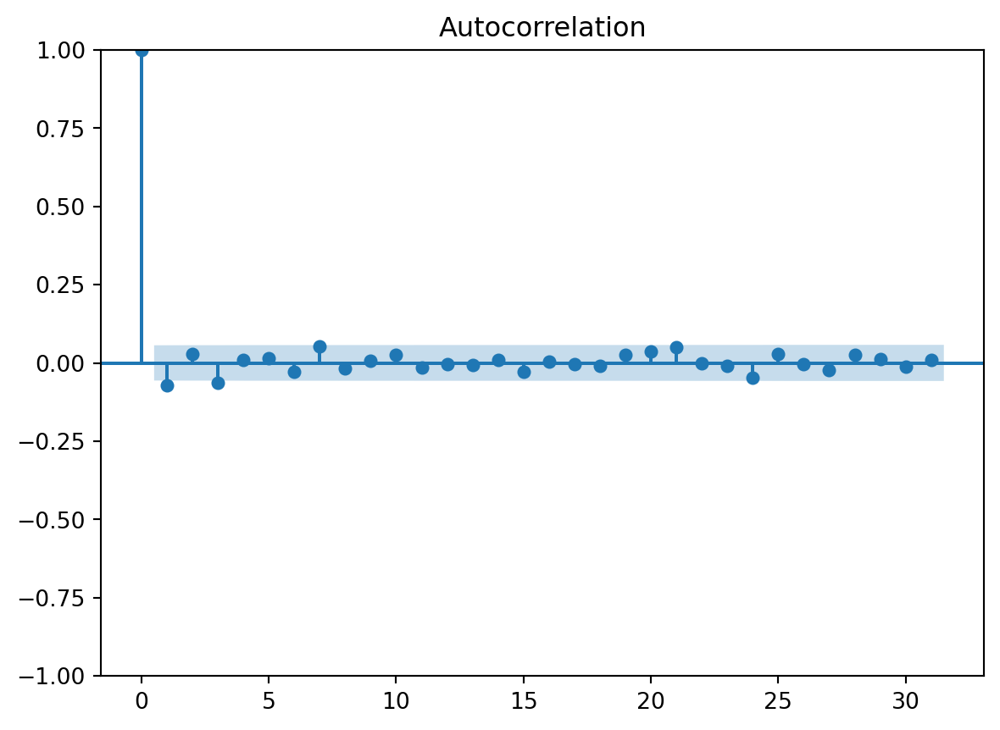
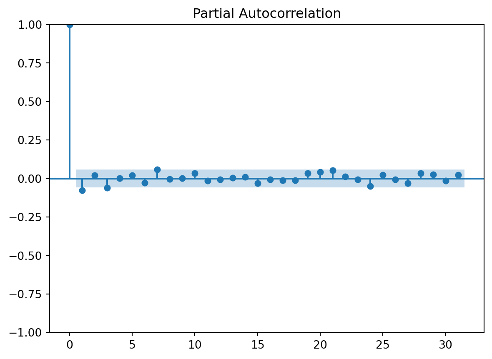
The first point (at lag 0) is the time series value itself, so it will always show a correlation of 1.00. The only lag that appears to be truly significant in both the ACF and PACF plots is at lag 1. The point at lag 3 is borderline, so we will not use that lag at this time.
Based on these, we will set our initial ARIMA values for p (the AR order) and q (the MA order) to 1. Because both plots show the same single significant lag, it isn’t clear whether an AR term, an MA term, or both best explain the pattern. So we will also compare versions that set one of these orders to 0 to see which model is most promising.
Model Creation and Comparison
Let’s create these different versions of our ARIMA model now. We will use statsmodels’ ARIMA() function to build these models. There are more automated versions of ARIMA available, but this is a good starting point when just learning how ARIMA works.
arima_111 = ARIMA(y_log_train, order=(1, 1, 1)).fit()
arima_110 = ARIMA(y_log_train, order=(1, 1, 0)).fit()
arima_011 = ARIMA(y_log_train, order=(0, 1, 1)).fit()
#Note, we do not use the differenced data here. We use the log-transformed data, and the ARIMA function differences it for us based on our d value.
#The nice thing is that when we go to make predictions, our ARIMA model will automatically provide "undifferenced" results for us.
#You must use the .fit() method before you can use the model. Many times, you can simply add it to the end of your code when initially setting up the model.Let’s compare the summary for each ARIMA model we set up to help determine which is most appropriate.
print(arima_111.summary())
print(arima_110.summary())
print(arima_011.summary()) SARIMAX Results
==============================================================================
Dep. Variable: Open No. Observations: 1090
Model: ARIMA(1, 1, 1) Log Likelihood 2133.710
Date: Fri, 13 Nov 2026 AIC -4261.419
Time: 15:34:29 BIC -4246.440
Sample: 0 HQIC -4255.750
- 1090
Covariance Type: opg
==============================================================================
coef std err z P>|z| [0.025 0.975]
------------------------------------------------------------------------------
ar.L1 -0.6037 0.216 -2.796 0.005 -1.027 -0.181
ma.L1 0.5352 0.227 2.357 0.018 0.090 0.980
sigma2 0.0012 2.99e-05 38.868 0.000 0.001 0.001
===================================================================================
Ljung-Box (L1) (Q): 0.04 Jarque-Bera (JB): 748.48
Prob(Q): 0.85 Prob(JB): 0.00
Heteroskedasticity (H): 0.61 Skew: 0.07
Prob(H) (two-sided): 0.00 Kurtosis: 7.06
===================================================================================
Warnings:
[1] Covariance matrix calculated using the outer product of gradients (complex-step).
SARIMAX Results
==============================================================================
Dep. Variable: Open No. Observations: 1090
Model: ARIMA(1, 1, 0) Log Likelihood 2132.816
Date: Fri, 13 Nov 2026 AIC -4261.632
Time: 15:34:29 BIC -4251.646
Sample: 0 HQIC -4257.853
- 1090
Covariance Type: opg
==============================================================================
coef std err z P>|z| [0.025 0.975]
------------------------------------------------------------------------------
ar.L1 -0.0748 0.024 -3.118 0.002 -0.122 -0.028
sigma2 0.0012 2.99e-05 38.991 0.000 0.001 0.001
===================================================================================
Ljung-Box (L1) (Q): 0.00 Jarque-Bera (JB): 738.32
Prob(Q): 0.97 Prob(JB): 0.00
Heteroskedasticity (H): 0.62 Skew: 0.06
Prob(H) (two-sided): 0.00 Kurtosis: 7.03
===================================================================================
Warnings:
[1] Covariance matrix calculated using the outer product of gradients (complex-step).
SARIMAX Results
==============================================================================
Dep. Variable: Open No. Observations: 1090
Model: ARIMA(0, 1, 1) Log Likelihood 2132.680
Date: Fri, 13 Nov 2026 AIC -4261.361
Time: 15:34:29 BIC -4251.375
Sample: 0 HQIC -4257.581
- 1090
Covariance Type: opg
==============================================================================
coef std err z P>|z| [0.025 0.975]
------------------------------------------------------------------------------
ma.L1 -0.0728 0.024 -3.037 0.002 -0.120 -0.026
sigma2 0.0012 2.99e-05 38.978 0.000 0.001 0.001
===================================================================================
Ljung-Box (L1) (Q): 0.01 Jarque-Bera (JB): 740.06
Prob(Q): 0.90 Prob(JB): 0.00
Heteroskedasticity (H): 0.62 Skew: 0.06
Prob(H) (two-sided): 0.00 Kurtosis: 7.04
===================================================================================
Warnings:
[1] Covariance matrix calculated using the outer product of gradients (complex-step).Comparing these summaries is a little tedious. However, just looking at the AIC and BIC, we see similar results across the board. In the first model, ARIMA(1, 1, 1), we see the coefficients for the AR and MA terms essentially cancel out. The ARIMA(0, 1, 1) and ARIMA(1, 1, 0) are very similar. For our purposes, we will go with the ARIMA(1, 1, 0) model because its AIC and BIC are slightly lower.
Generating Fitted Values and Forecasts
Now we will generate our fitted values and forecasts so we can see how well our model performs. We need to take the inverse of the log using the np.exp() function to return our values to the original USD units.
#Generate fitted values by using the predict method
arima_fitted = arima_110.predict(start=y_log_train.index[0], end=y_log_train.index[-1])
arima_fitted.name = 'arima_fitted'
arima_fitted = np.exp(arima_fitted)
#Generate predicted values in test set by using the forecast method
arima_forecasts = arima_110.forecast(steps=len(y_log_test))
arima_forecasts.index = y_log_test.index
arima_forecasts.name = 'arima_forecasts'
arima_forecasts = np.exp(arima_forecasts)
#Taking inverse of our test set actuals as well
y_test = np.exp(y_log_test)C:\Users\Joel\AppData\Local\Programs\Python\Python313\Lib\site-packages\statsmodels\tsa\base\tsa_model.py:837: ValueWarning: No supported index is available. Prediction results will be given with an integer index beginning at `start`.
return get_prediction_index(
C:\Users\Joel\AppData\Local\Programs\Python\Python313\Lib\site-packages\statsmodels\tsa\base\tsa_model.py:837: FutureWarning: No supported index is available. In the next version, calling this method in a model without a supported index will result in an exception.
return get_prediction_index(We can plot our values to see how well our model performs visually against the actual stock prices. We will take just a portion of our fitted values to make it a little easier to see the test set period.
arima_projections = pd.concat([arima_fitted, arima_forecasts], axis=0) #Combining for easier visualization
arima_projections[500:].plot(figsize=(8, 6), label='Forecast')
y[500:].plot(label='Actuals')
plt.axvline(x=y_test.index[0], c='red', linestyle='--', label='Start of Test Set')
plt.title('NVDA Stock Opening Price: Forecasts vs Actuals')
plt.xlabel('Date')
plt.legend()
plt.ylabel('Stock Open Price (USD)')
plt.show()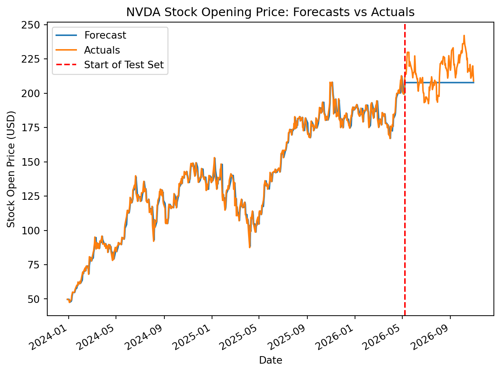
Notice what happens as the ARIMA model forecasts through the test period; it turns into a flat line. This is because our model has no drift (constant) term. The forecasted daily change quickly decays toward zero, so the forecasted price levels off instead of continuing to climb.
The main limitation of our model appears to be that it does not account well for the trend as it extends into the future. ARIMA can include a drift term through its trend parameter (trend=‘t’ when d=1). However, when we tested this parameter out on our NVDA time series data, the drift coefficient was not statistically significant, and because the model works with log prices, the drift compounds as a growth rate, which led to the model overshooting the test period badly. We’ll explore handling trend in more depth in a future article. We can also perform other types of models, such as Exponential Smoothing with Trend, to see if they perform better on our data set.
For now, let’s create a naive model with trend and compare the results with our ARIMA model.
Step 4: Naive Model Creation
For more details on how to set up a naive model with trend, check out this article. The following code cell completes this process in its entirety.
#Take inverse of train set to reverse log transform
y_train = np.exp(y_log_train)
#Create simple naive fitted values and forecast values
naive_fitted = y_train.shift(1).dropna()
naive_forecast = pd.Series(y_train.iloc[-1], index=y_test.index)
#Create drift value that will be used to include trend in the model
drift_value = (y_train.iloc[-1]-y_train.iloc[0])/(len(y_train)-1)
#Create naive fitted values with trend
naive_fitted_with_trend = naive_fitted + drift_value
# Add in trend for forecast values using steps to make sure it accumulates properly over time
step = range(1, len(naive_forecast)+1)
naive_forecast_with_trend = naive_forecast + (drift_value * step)
#Create naive forecast vs actuals visual
naive_projections = pd.concat([naive_fitted_with_trend, naive_forecast_with_trend], axis=0)
naive_projections.plot(figsize=(8,6), label='Naive Forecasts')
y.plot(label='Actuals')
plt.axvline(x=y_test.index[0], c='red', linestyle='--', label='Start of Test Set')
plt.title('NVDA Stock Opening Price: Naive Forecasts vs Actuals')
plt.xlabel('Date')
plt.legend()
plt.ylabel('Stock Open Price (USD)')
plt.show()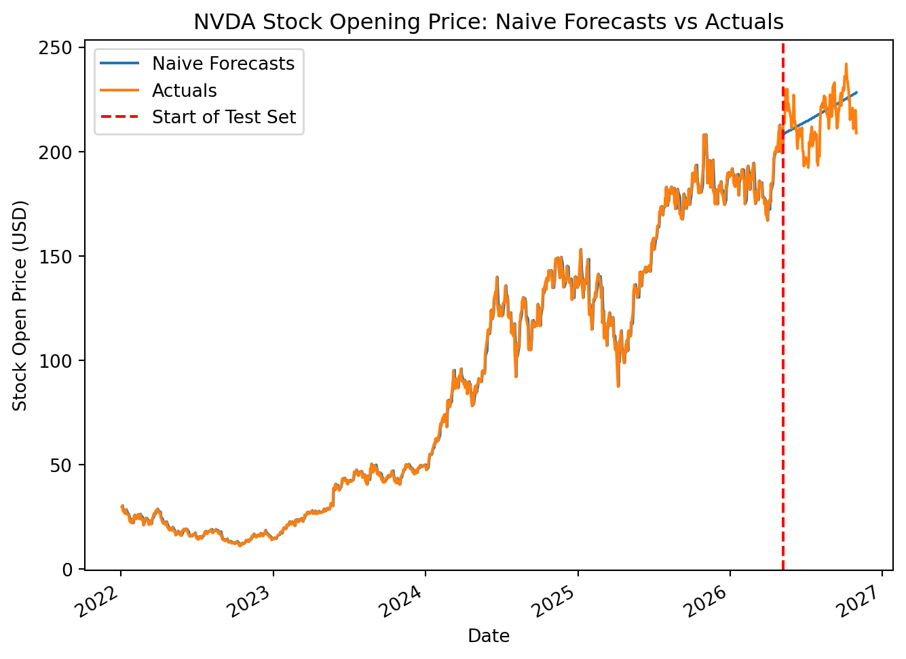
This visual shows that our naive forecast with trend keeps a better pace with the actual results in the test set. NVDA’s stock price has been increasing, and our ARIMA model, which does not include trend, is not as effective in this case.
Let’s take a moment to run some metrics to quantify how much better our naive forecast with trend performs compared to our ARIMA model.
Step 5: Measure Model Performance
Ordinarily, we would use rolling-horizon cross-validation to compare models. We would not compare their performance directly on our test set, which is reserved for after a model has already been selected to gauge its performance on unseen data. Rolling-horizon cross-validation will be covered in a future article. In this case, we will use our test set to analyze how each model performs on unseen data.
For this exercise, we will use sklearn’s mean_absolute_error and root_mean_squared_error. The mean absolute error (MAE) gives us an idea of how far off our forecasts are on average, in the same units as the original data (USD). The root mean squared error (RMSE) penalizes big misses more severely by squaring the errors first. Together, they help us understand, in quantitative terms, how our two models stack up. As a reminder, the lower the MAE and RMSE, the more accurate the model.
mae_arima = mean_absolute_error(y_test, arima_forecasts)
mae_naive = mean_absolute_error(y_test, naive_forecast_with_trend)
rmse_arima = root_mean_squared_error(y_test, arima_forecasts)
rmse_naive = root_mean_squared_error(y_test, naive_forecast_with_trend)
print("MAE")
print(" ARIMA: ", mae_arima)
print(" Naive: ", mae_naive)
print("------------")
print("RMSE: ")
print(" ARIMA: ", rmse_arima)
print(" Naive: ", rmse_naive)MAE
ARIMA: 11.446889141262561
Naive: 8.74100671393516
------------
RMSE:
ARIMA: 13.661101922743619
Naive: 10.678895609245771As we suspected, our naive forecasting model with trend has a lower MAE and RMSE than our ARIMA model. On average, our ARIMA model’s forecast is off by ~$11.45 per day during the test period, while the naive model with trend is only off by ~$8.74 per day.
Conclusion
In this article, we walked through a basic end-to-end time series modeling project. We explored NVDA’s daily stock prices and used them to build a basic ARIMA model. While the ARIMA model was slightly more complex to build, it did not outperform a naive model with trend. This is not surprising, as daily stock data often does not have much structure to draw from. The main structure of this time series is its trend, and the ARIMA model does not account for that.
That being said, with many other time series data sets, ARIMA models can be quite useful and outperform naive baselines, particularly when there is more autocorrelation at previous lags. It is always a good idea to try a variety of different models and see which are most effective for your time series. Sometimes, though, the simpler model is the better one. Using metrics like MAE and RMSE is an important step to quantify and track model performance.